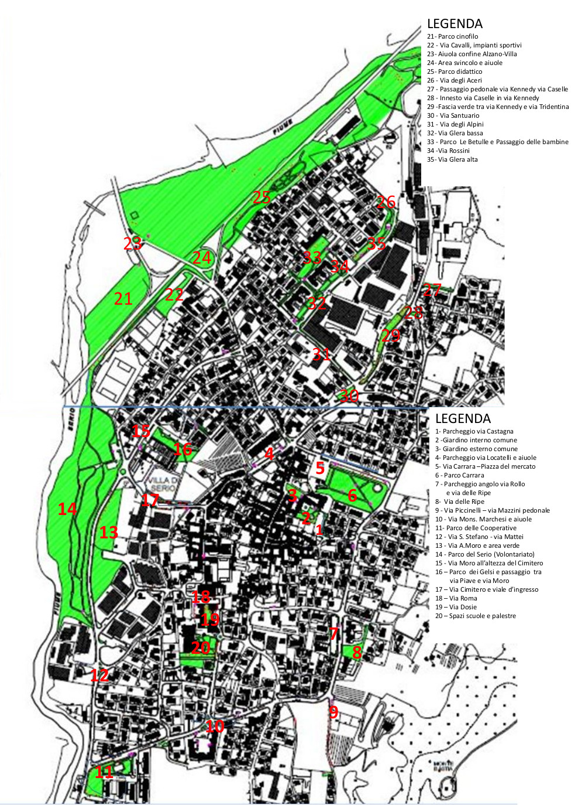

Nella mappa allegata sono indicate 35 stazioni che individuano sul territorio altrettante aree di verde pubblico.
Clicca i numeri indicati in rosso e visualizzerai l'elenco delle specie osservate nell'area.
I dati sono raccolti all'interno del progetto "Verde pubblico urbano" del sito iNaturalist.org
